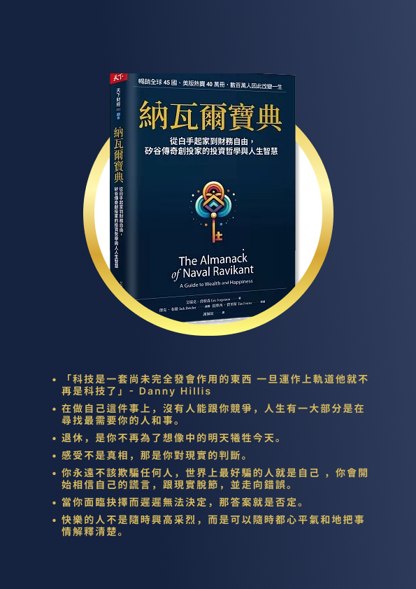
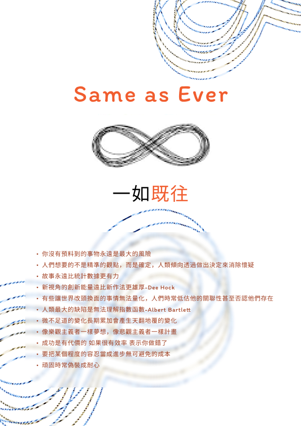
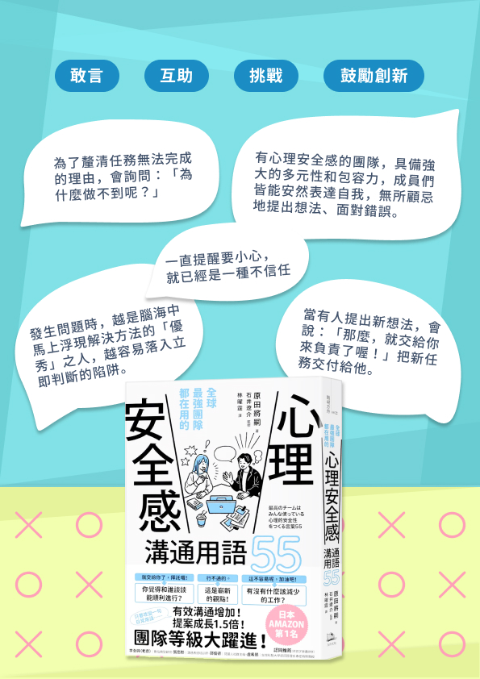
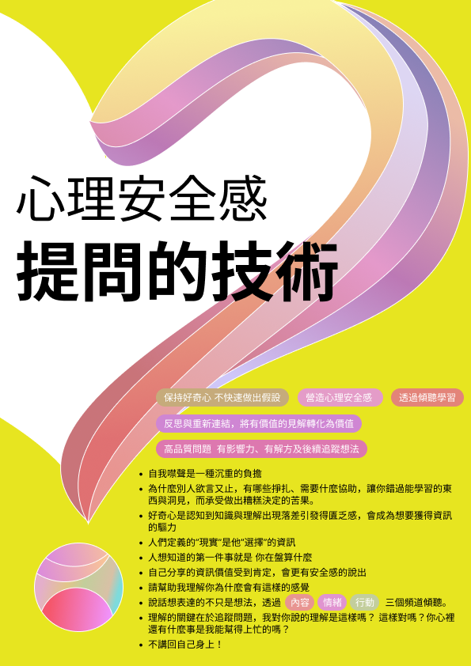

總是期許自己 如章魚般 柔軟靈巧
觀察環境 隱匿行跡
在流動之間 練習尋回逐步清晰的色彩
WHAT SHAPED ME
Understand Before Solve
每到一個新的環境，我都會先觀察它是如何運作。
主動了解每個人的工作流程、需求與瓶頸，並試著理解不同的視角與立場。
我相信，沒有最好的解方，只有更深的理解。
教育 × 政府 × 需求訪談 × AI 專案
Connect Different Languages
不同角色、不同專業、不同立場，講著不同的語言。
為了匯聚共識，我選擇主動踏入每個領域——學習設計思維、理解程式邏輯、補足商業管理視野。
發掘立場背後的困難，將抽象需求轉譯為團隊共識；降低跨領域的溝通成本，才能發揮專業分工的最大效益。
教育 × 臺大管理碩士學分班 × UI/UX × 網頁設計 × python
Turn Ideas Into Systems
動手嘗試，梳理流程、畫面或產品概念。
即便只有一小步
重要的是，讓一個想法真的開始。
專案管理 × 需求訪談 × 流程優化 × AI
LEAVE YOUR FOOTPRINTS
GALLERY
不夠完美的過程，終將成未來的基石。

學習，是為了親手將想法築成現實
網站開發－串聯UI設計與前端邏輯，獨立建構跨領域的對話

AI擴大解方的可能性，也放大需求的重要性
展會媒合系統-首次主導 AI 客製化系統，從需求一路到落地。

進步，是每一次的選擇累積而成
企劃提案-和夥伴相互督促，珍惜每次累積自己的機會。

數位化不是目的，是重新了解使用者
APP優化-設計沒有正確的答案，只有溝通的共識

風格，是品牌無聲的影響力
UIUX-主導專案架構並挑戰鮮豔撞色風格

美感，來自對日常的持續觀察
CIS設計-臺灣經典日常的全新面貌。

數據，應該要能自己說話
dash bord-找到對數據的理解，才能發揮輔助決策的價值。

效率，往往藏在微小的細節裡
流程優化-梳理繁瑣流程，是組織應有意識改善的細節

理解傳達目的，並幫訊息找到自己的位置。
平面設計-以視覺化的溝通方式應對跨部門且多層級的意見

顯而易見的，往往不是關鍵
User Interview-將隱性經驗直覺轉化為決策模型
NOTES





